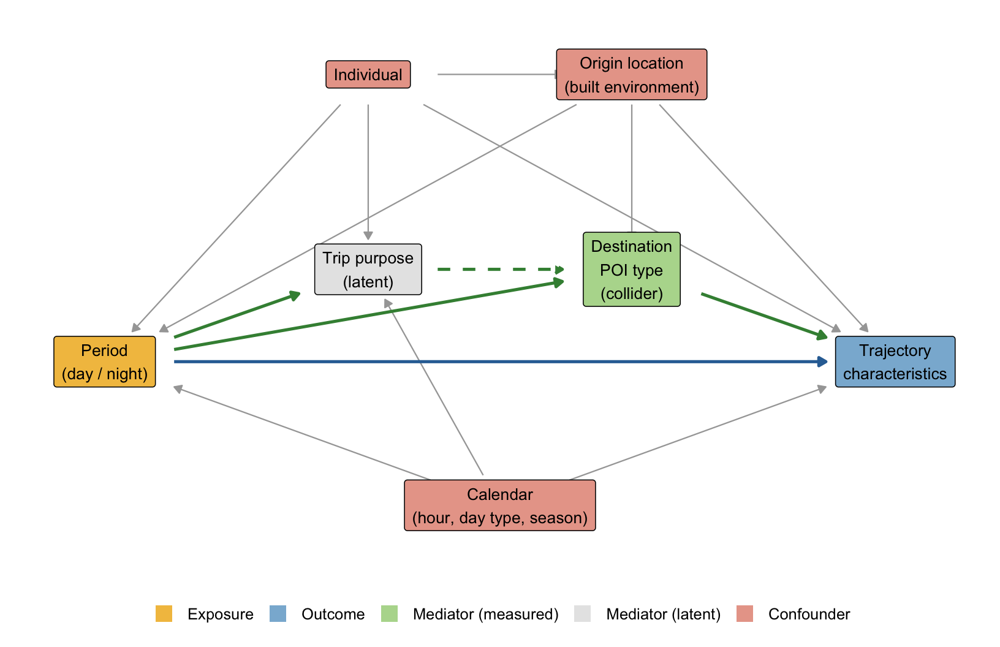

EPPS 6302 Methods of Data Collection and Production: Prepare for Class 5
Week 5 — Fall 2026
Before we meet
Finish Assignment 3, read the robots exclusion standard properly, and come with a causal diagram of something you actually want to explain.
1. Assignments
- Finish Assignment 3 — ACS via tidycensus.
Done
- Preview Assignment 4.
Not yet available.
2. Read
- Aydin, Olgun. 2018. R Web Scraping Quick Start Guide: Techniques and Tools to Crawl and Scrape Data from Websites. Packt Publishing.
Done
- The robots exclusion standard — https://www.robotstxt.org/
- Work through the Frequently Asked Questions — https://www.robotstxt.org/faq.html
Done
The standard has moved on. robotstxt.org documents the 1994 de facto convention. It was formalised as an IETF standard in 2022 — RFC 9309, Robots Exclusion Protocol — which is the version a court or a platform will cite. Skim it: https://www.rfc-editor.org/rfc/rfc9309.
Done
3. Weekly challenge — causal structure
- What is causal inference? Be able to say it in two sentences.
Causal inference is the process of determining whether a change in one factor causes a change in another. Data, along with statistical methods, are used to estimate what would have happened under a counterfactual if something had been different.
- Draw a causal diagram of something from existing research or your own project — a DAG: nodes are variables, arrows are causal claims.
- Mark at least one confounder — a common cause of two variables — and a collider if you have one.
- Draw it with
ggdagin R, or at https://www.dagitty.net.
Figure 1 shows the assumed causal structure. Period, the exposure, can affect trajectory characteristics along two routes. The green paths run through destination POI type and represent composition (H1). The blue path is the effect of period within destination type and represents the temporal account (H2). H3 holds if both routes carry weight. Individual, origin location, and calendar (hour, day type, season) are confounders, because each is a common cause of period and trajectory. Destination POI type is also a collider, because period and origin both point into it. Holding destination type constant therefore opens a path from period through origin to trajectory, so the model that holds destination type constant must also adjust for origin. Trip purpose is unobserved and is assumed to reach trajectory only through destination type. Stops coded by hand test that assumption by period.
- Bring it. We will ask what data each arrow would require.
| Path | Arrow | Data required | Source |
|---|---|---|---|
| Hypothesis | Period → Trajectory (H2) | Trip midpoint times, civil twilight times for North Texas, and trajectory metrics (topology, spatial extent) | GPS; twilight computed |
| Hypothesis | Period → Destination POI | Period per trip and destination type per stop | GPS; US Structures Dataset |
| Hypothesis | Period → Purpose | Activity at each stop, by period | Hand codes (partial) |
| Hypothesis | Purpose → Destination POI | Activity and destination type at the same stops | Hand codes; POI match |
| Hypothesis | Destination POI → Trajectory | Destination type per trip and trajectory metrics | POI match; GPS |
| Confounding | Individual → Period | Person ID and several trips per person in both periods | GPS |
| Confounding | Individual → Purpose | Person ID and activity codes | Hand codes |
| Confounding | Individual → Origin | Person ID and each person’s usual origins (home, work) | GPS stop history |
| Confounding | Individual → Trajectory | Person ID and several trips per person | GPS |
| Confounding | Origin → Period | Previous stop location, built environment measures, and period | GPS; land use layers |
| Confounding | Origin → Destination POI | Origin location and destination type (proximity) | GPS; POI match |
| Confounding | Origin → Trajectory | Origin built environment and trajectory metrics | Land use layers; GPS |
| Confounding | Calendar → Period | Date and hour per trip, across seasons | GPS timestamps |
| Confounding | Calendar → Purpose | Date and hour, plus activity codes | GPS; hand codes |
| Confounding | Calendar → Trajectory | Date and hour, a holiday list, and trajectory metrics | GPS; calendar table |
4. More reading
- EGAP, 10 Things to Know About Causal Inference (Macartan Humphreys) — https://egap.org/resource/10-things-to-know-about-causal-inference/
Done
- Glymour, Pearl and Jewell. 2016. Causal Inference in Statistics: A Primer. Wiley. Pearl’s JSM 2012 slides — http://bayes.cs.ucla.edu/jsm-july2012-pdf.pdf
Done
- Peters, Janzing and Schölkopf. 2017. Elements of Causal Inference. MIT Press — free, open access at https://library.oapen.org/handle/20.500.12657/26040
Done